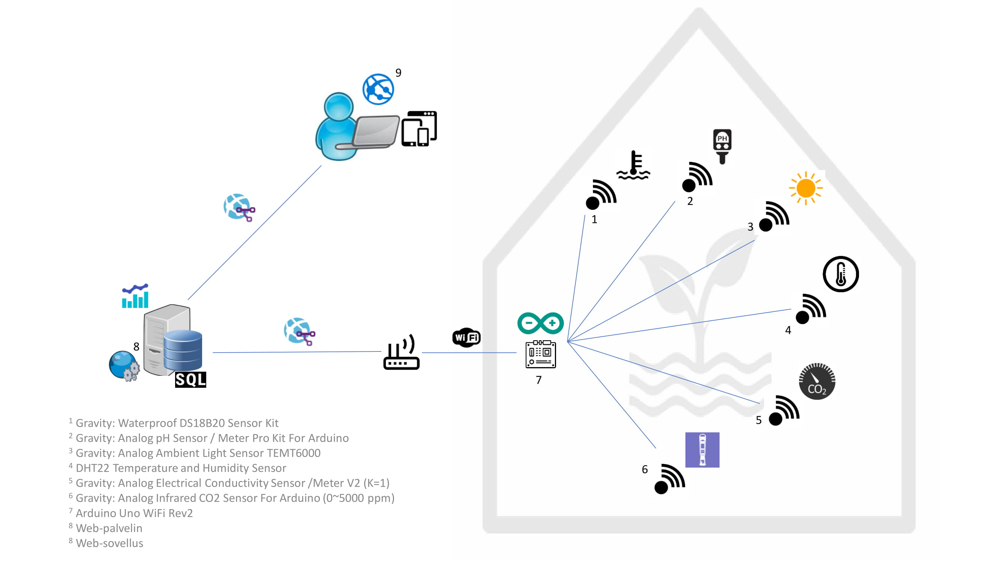
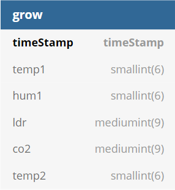
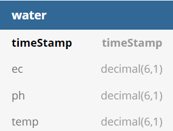

Info
Käyttöopas
Laitteen käyttöoppaasta löytyy yksityiskohtaiset ohjeet kuinka laitetta pystytään käyttämään sekä tunnistetut virhetilanteet ja kuinka niistä käyttäjä pystyy pääsemään eroon.
KäyttöopasKäytetyt laitteet ja teknologiat
Alle on listattu projektissa käytetyt laitteet ja teknologiat, joiden avulla koko projekti toimii. Listattujen laitteiden ja teknologioiden avulla käyttäjä ymmärtää kuinka projekti on rakennettu ja kuinka projektia voidaan mahdollisesti jatkokehittää.

Järjestelmän arkkitehtuuri ja laitteisto koostuu sensoreista, mikrokontrollerista, web-palvelimesta ja loppukäyttäjälle suunnatusta web-sovelluksesta edellä olevan kuvan mukaisesti. Mitattavia suureita on yhteensä 7, joista 4 liittyy kasvihuoneympäristön monitorointiin ja 3 ravinneliuoksen tarkkailuun. Ympäristöstä saadaan tietoa lämpötila-, kosteus-, valoisuus- ja hiilidioksidisensoreiden kautta ja ravinneliuoksesta sen lämpötilan, pH-arvon ja sähkönjohtavuuden avulla. Sensoreilta data kerätään Arduino Uno Rev2 -mikrokontrolleriin, jossa sisäänrakennettu WiFi-moduuli mahdollistaa tietojen lähettämisen eteenpäin langattoman verkon kautta Internetin yli web-palvelimelle. Palvelimella tieto kerätään MySQL-pohjaiseen relaatiotietokantaan, josta tiedot poimitaan loppukäyttäjälle mittaukset visualisoivaan selainpohjaiseen web-sovellukseen.
Sensorit
Projektissa käytetyt sensorit löytyvät painamalla alla olevaa painiketta.
SensoritArduino
Projektissa on käytetty Arduino UNO WiFi REV2 -mikrokontrolleria, joka kerää vesikasvatusympäristöstä sensoreilta kerätyn datan. Arduino UNO WiFi REV2 tulee sisäänrakennetun WiFi-moduulin kanssa, joka tekee langattomasta tiedonsiirrosta helppoa. Muistia mikrokontrollerissa on 48 kilotavun Flash Memory, 6 144 tavun SRAM sekä 256 tavun EEPROM. Arduino tarjoaa 13 digitaalista I/O pinniä sekä 5 analogista pinniä. Projektissa sensoreille on varattu 7 pinniä, joista vapaaksi pinnejä jää 12 muuhun käyttöön.
WiFi
Arduino on yhdistettynä langattomaan verkkoon, jonka avulla tiedot siirretään projektin tietokantaan. Tiedonsiirto vaatii langattoman yhteyden (WiFi), muuten tietoja ei saa siirrettyä tietokantaan. Tietojen siirtäminen onnistuu tällä hetkellä vain langatonta verkkoyhteyttä hyödyntäen. Arduino yhdistetään langattomaan verkkoon käyttöoppaan kappaleen 1.1. antamien ohjeiden mukaisesti.
Tietokanta


Tietokanta on rakennettu MySQL-tietokantaa hyödyntäen ja se asennettuna Kokkolan Yliopistokeskus Chydeniuksen Apache-palvelimelle. Tietokantaan varastoidaan Arduinolta tuleva sensoridata, joka voidaan lopulta hakea tietokannasta verkkokäyttöliittymään käyttäjän nähtäväksi. Tietokanta on rakennettu kahdesta taulukosta, joista ensimmäisessä taulussa on säännöllisen mittauksen tulokset. Mittausväli on 5 min.
Säännöllisesti mitattavaa sensoridataa ovat: ilman lämpötila, kosteus, valoisuus, hiilidioksidipitoisuus. Tauluun tallennetaan myös mittauksen aikaleima.
Toinen taulu sisältää niiden sensorimittausten tulokset, jotka käyttäjä käynnistää itse: aikaleima, sähkönjohtavuus ja pH.
Verkkokäyttöliittymä


Verkkokäyttöliittymä hakee tiedot MySQL-tietokannasta. Verkkokäyttöliittymän sivut ovat rakennettu HTML-kuvauskielellä, jonka rinnalla on käytetty Bootstrap v4.3.1-kirjastoa. Verkkokäyttöliittymän kuvaajat ovat luotu hyödyntäen Chart.js v2.8.0 JavaScript-kirjastoa sekä käyttöliittymän painikkeiden toiminnalisuudet on luotu käyttäen jQueryä.
HTML ja CSS
Verkkokäyttöliittymän runko on rakennettu HTML-kuvauskielellä sekä CSS-tyylikirjastoa hyödyntäen. Verkkokäyttöliittymä on testattu moderneilla selaimilla sekä validoitu käyttämällä W3C validaattoria.
Bootstrap
Bootstrap on kirjasto, johon on määritelty oletustyylejä sekä skriptejä valmiiksi, joka tekee sen käyttöönotosta nopeaa ja helppoa. Bootstrapin avulla verkkokäyttöliittymään on voitu luoda verkkosivujen responsiivisuus, jotta verkkokäyttöliittymä on käytettävä moderneilla selaimilla laitteen näyttökoosta riippumatta.
Chart.jsVerkkokäyttöliittymän kuvaajat ovat toteutettu Chart.js -JavaScript kirjastolla. Chart.js tarjoaa monia eri kuvaajatyyppejä, joista verkkokäyttöliittymässä on käytetty mixed-line charttia.
jQuery
jQuery on yksinkertaistettu JavaScript-kirjasto, joka tarjoaa useita valmiita funktioita. jQueryn avulla voi esimerkiksi animoida painikkeen painallukset.